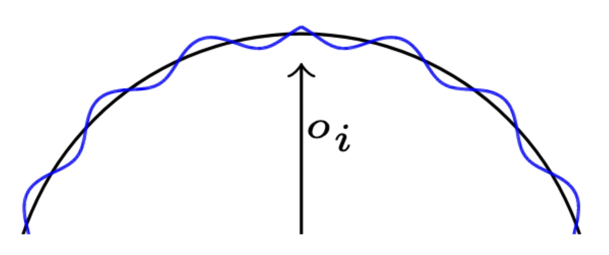

TypeScript
Three.js
UV sphere
Icosphere
Flera oktaver av simplex noise
float heightOffset = 0.0;
for(int i = 0; i < numOctaves; ++i) {
float noise = 0.5 + 0.5 * snoise(freq * pos);
heightOffset += amp * noise;
amp *= persistance; // Usually ≈ 0.5
freq *= lacunarity; // Usually ≈ 2.0
}
float heightOffset = 0.0;
float normalizeFactor = 0.0;
for(int i = 0; i < numOctaves; ++i) {
float noise = 0.5 + 0.5 * snoise(freq * pos);
heightOffset += amp * noise;
normalizeFactor += amp;
amp *= persistance; // Usually ≈ 0.5
freq *= lacunarity; // Usually ≈ 2.0
}
heightOffset /= normalizeFactor;
Hur kan vi åstadkomma flackare fält och brantare berg?
Hur kan vi åstadkomma flackare fält och brantare berg?
Refraktion
Reflektion
Fresneleffekten
Vågor
Fresneleffekten
Schlicks approximation:
Två typer av vågor:
Spherical trochoidal waves
Psrd noise bump map
Spherical trochoidal waves
Men först trochoidal waves i 2D
Visualisering av @FreyaHolmer på twitter
Spherical trochoidal waves
Men först trochoidal waves i 2D
Visualisering av @FreyaHolmer på twitter
Spherical trochoidal waves
Anpassat för sfärer av Florian Michelic i ”Real-Time Rendering of Procedurally Generated Planets”
Psrd noise bump map
Brusfunktion av Stefan Gustavson och Ian McEwan
vec3 gradient = vec3(0.0);
psrdnoise(pos * freqScale, // Sample point
vec3(0.0), // Period
wavesSpeed * time, // Gradient rotation
gradient); // Gradient out parameter
// Project gradient onto tangent plane
vec3 proj = gradient - dot(gradient, n) * n;
vec3 finalNormal = normalize(n - bumpAmount * proj);
Flow noise på ytan av en sfär
vec3 gradientSum = vec3(0.0), gradient = vec3(0.0);
float noise = 0;
for(float i = 0.0; i < 7.0; i++) {
noise += amp * psrdnoise(
scale * v + warp * gradientSum, // Sample point
period, // Period
scale * 0.1 * time, // Gradient rotation
gradient); // Gradient out param
gradientSum += amp * gradient;
amp *= mix(0.9, 0.1, smoothness); // uniform
scale *= 2.0;
}
Komplicerad fysik
...som jag skippar till förmån för extrema approximationer
Förenklad Fresnelterm \[\alpha = \left( 1 - \vec V \cdot \vec N \right)^a\]
Wrapped diffuse
\[ I_d = \max\!\left(0, \, \frac{(\vec L \cdot \vec N) + w}{1 + w}\right)\]